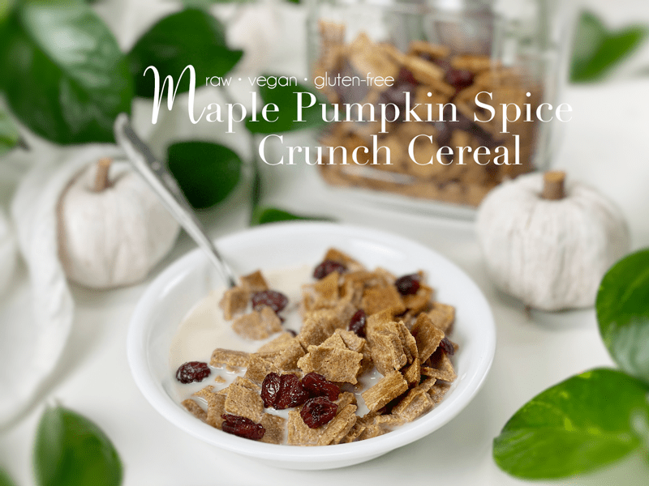
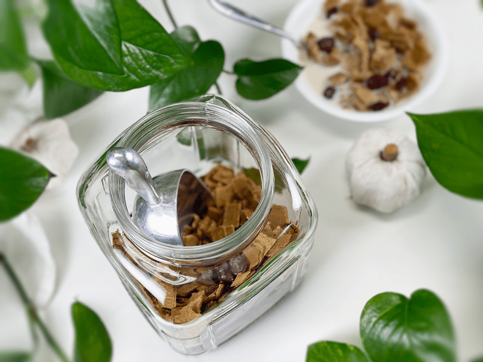
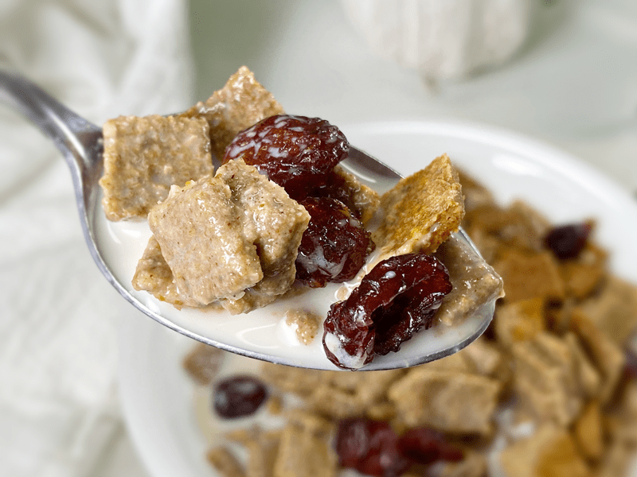
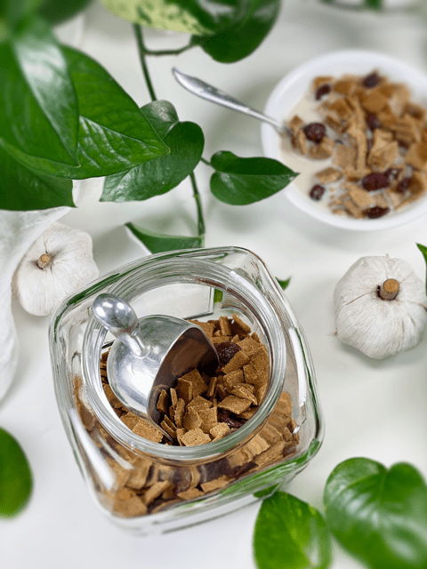
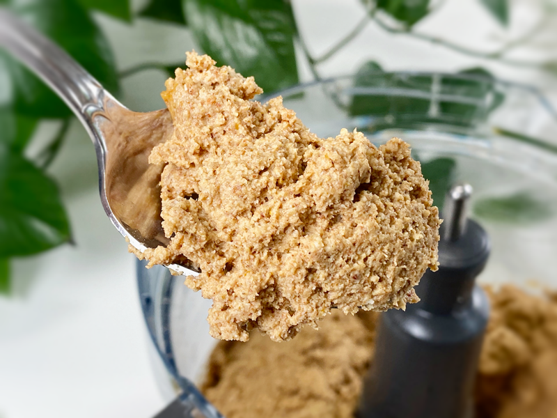
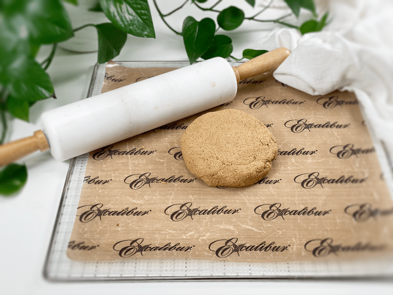
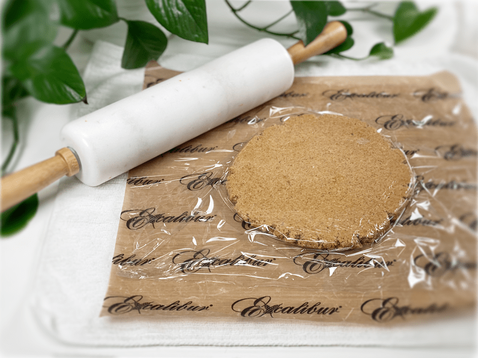
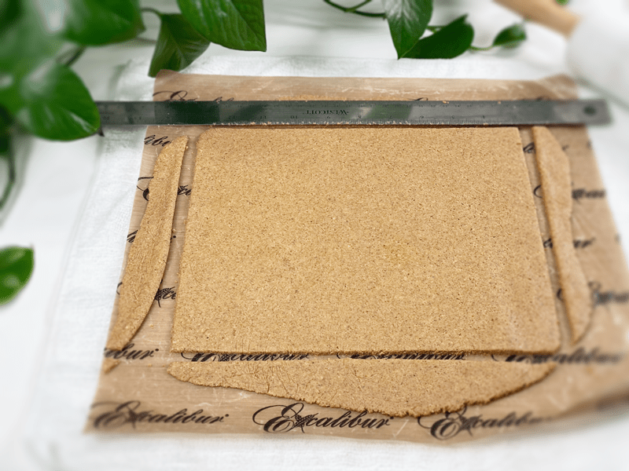
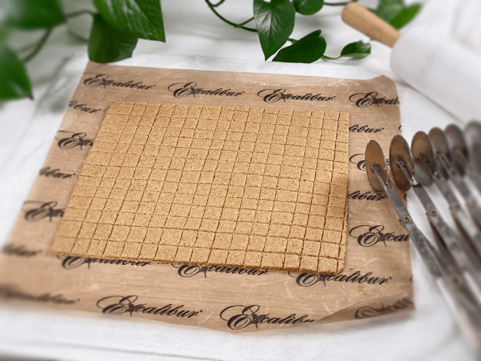

Maple Pumpkin Spice Crunch Cereal

I have one word for this cereal: raw, vegan, gluten-free, tasty, delectable, luscious, appetizing, flavorful, sweet, succulent, toothsome, exquisite, dainty, delicate, distinctive, ambrosial, heavenly, tempting, enticing, mouth-watering, piquant, gourmet, epicurean, scrumptious, yummy, fit for a king… oh dear, I said one word, didn’t I?

I don’t have a childhood story of some chemical-laden cereal that I grew up on, of which my new creation is reminiscent. As a child, the word pumpkin was seven-letter word that was spoken around Halloween.
And maybe, just maybe… if I was lucky, it was brought up around Thanksgiving, too. But I only knew pumpkin as a one-dish wonder: pumpkin pie. I now have recipes for pumpkin pie, pumpkin smoothies, pumpkin bread, pumpkin bars… but having a cereal such as this is a first, and a delightful one at that.

Almond Pulp
- I use almond pulp as the foundation of this recipe because it uses up a byproduct of making almond milk, and it gives the cereal a light and airy texture that I enjoy.
- Every batch of pulp will differ in moisture due to how much of the milk you are able to squeeze from the nut bag, so if it is really dry feeling, you may need to add a couple of tablespoons of water or almond milk to the dough.
- SUBSTITUTIONS: If you don’t wish to use the almond pulp, you can use finely ground almonds. I haven’t tested this, but it’s worth a shot. Another option that I have tried is almond pulp flour, for which I added 2 tablespoons of water to the batter. I suggest this only if you already have it made up and are looking to use it. I usually freeze my almond pulp, creating a plentiful stash, but when I start to get tight on freezer space, I will dehydrate it and powder it in the food processor.
Gluten-Free Rolled Oats
- You will notice that I call for the oats to be SOAKED. I provided a link to explain how (and why) I do that (super simple). I don’t recommend skipping this step because it softens the oats, bringing a lot of moisture to the batter, which is needed.
- Soaking the oats also helps the starches break down and reduces the natural phytic acid, which may help your body utilize the oats’ nutrients much more efficiently.

Pumpkin Puree
- If you plan on making your own raw pumpkin puree, be sure to use SUGAR pumpkins. I find that they give the best flavor and texture.
- If you decide to make this recipe when it isn’t pumpkin season, you can use canned organic PLAIN pumpkin. If you do decide to use canned, please be sure to read the ingredients to ensure that they didn’t add any additional ingredients.
- SUBSTITUTION IDEAS: If you find yourself in the middle of this recipe and you realize that you don’t have any pumpkin or sweet potato, applesauce will work due to its moisture and texture, but it won’t give that pumpkin hit, so you will then want to increase the pumpkin spice powder. There is always a work-around! Canned sweet potato is yet another option and a great stand-in for pumpkin.
Sweeteners
- In this recipe, I used two different sweeteners: maple syrup and NuNaturals liquid stevia. I find that this is a great way to cut down the sugars without cutting down on the sweetness.
- You can use any sweetener you want and in any volume. My taste buds have been trained to enjoy less-sugary foods, so I find myself reducing the use of sugars.
Pumpkin Spice
- If you don’t have pumpkin spice, you can make your own. This recipe yields 8 tsp of pumpkin spice: shake together 4 tsp ground cinnamon, 2 tsp ground ginger, 1 tsp allspice, 1 tsp nutmeg.

Ingredients:
Yields 4-5 cups = 1,250 (1/2”) squares
Preparation:
- Prepare the nut pulp as indicated in the link above. Place in the food processor, fitted with the “S” blade. *See above for almond pulp substitutions.
- After soaking the oats, drain and rinse for 2 minutes under cool water. Gently hand-squeeze the excess water and place the oats in the food processor.
- Add the pumpkin puree, sweetener, pumpkin spice, cinnamon, stevia, and salt. Process until everything is well mixed.
- Divide the dough in half and place each half on the non-stick sheet that comes with the dehydrator.
- If you don’t have non-stick sheets, use parchment paper but not wax paper (it will stick to that).
- Place plastic wrap over the top and roll the dough out from edge to edge to 1/4″ thickness. To prevent the teflex sheet from sliding around while rolling out the dough, place a wet towel under the teflex sheet.
- Score into bite-sized pieces with a long metal ruler, knife, or pizza cutter. Be careful that you don’t cut the sheet if using a sharp item.
- Be sure to spread it evenly, so it dries evenly.
- Dehydrate at 145 degrees (F) for 1 hour, then reduce to 115 degrees (F) for 16 hours or until dry.
- Partway through, once dry enough, flip the sheet over onto the mesh sheet that comes with the dehydrator and peel off the non-stick sheet. If it is leaving dough behind on the sheet, it isn’t dry enough. Leave as is and just slide back in to dry a bit more.
- Dry times will always vary due to climate, humidity, type of machine, and how full it is.
- As the dough dries, the little squares will shrink up, and some will pull away from one another.
- Once cool, add the dried cranberries, and store the cereal in an airtight container. On the counter, it should last up to 2 weeks, in the fridge or freezer…even longer!
The Institute of Culinary Ingredients:
- Learn more about maple syrup by clicking (here).
- Why do I specify Ceylon cinnamon? Click (here) to learn why.
- What is Himalayan pink salt, and does it really matter? Click (here) to read more about it.
- Click (here) to learn why I use stevia.
- Are oats gluten-free? Yes, read more about that (here).
- Are oats raw? Yes, they can be found. Click (here) to learn more.
Culinary Explanations:
- Why do I start the dehydrator at 145 degrees (F)? Click (here) to learn the reason behind this.
- Don’t own a dehydrator? Learn how to use your oven (here). I do however truly believe that it is a worthwhile investment.
-

-
Close-up of the dough before rolling it out.
-

-
Divide the dough into 2 balls, placing 1 in the center of a non-stick sheet.
-

-
Cover with a piece of plastic wrap and start rolling it out to roughly 1/8-1/4″ thickness.
-

-
Remove the plastic wrap and square up the edges (if desired, not required).
-

-
Score the cereal squares into bite-sized pieces and dehydrate.
© AmieSue.com